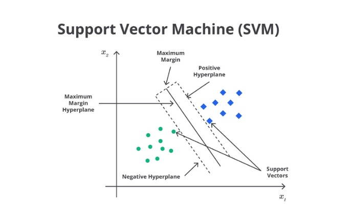

Belajar SVM, Decision Tree, dan Random Forest dari dasar sampai paham
Website ini dibuat untuk membantu mahasiswa memahami tiga algoritma klasifikasi yang sering muncul dalam pembelajaran mesin, yaitu Support Vector Machine, Decision Tree, dan Random Forest. Penjelasannya dimulai dari konsep yang paling dasar, lalu dilanjutkan dengan visual, parameter penting, dan demo interaktif supaya materinya terasa masuk akal, bukan sekadar hafalan istilah.
Bahasa sederhanaDari dasarVisual jelasDemo interaktif
Apa yang sebenarnya sedang kita pelajari?
Dalam pembelajaran mesin, salah satu tugas yang paling sering dibahas adalah klasifikasi. Klasifikasi adalah proses menentukan sebuah data masuk ke kelompok yang mana. Pada contoh dataset Iris, model diminta mengenali apakah sebuah bunga termasuk Setosa, Versicolor, atau Virginica berdasarkan ciri-cirinya, seperti panjang petal dan lebar petal.
Kalau dibayangkan secara sederhana, model itu seperti seseorang yang diberi banyak contoh, lalu diminta menemukan pola dari contoh-contoh tersebut. Setelah polanya terbentuk, model mencoba memakai pola itu untuk menebak data baru yang belum pernah dilihat sebelumnya.
Jadi, model bukan sekadar menghafal satu per satu data yang ada, tetapi belajar mengenali pola yang berulang di dalam data.
Tiga algoritma yang dibahas di website ini punya tujuan yang sama, yaitu membantu model menentukan kelas sebuah data. Bedanya, cara mereka mengambil keputusan tidak sama. SVM mencari batas pemisah terbaik, Decision Tree membuat keputusan lewat pertanyaan bertahap, dan Random Forest menggabungkan banyak pohon keputusan agar hasilnya lebih stabil.
Data
Data adalah kumpulan contoh yang dipakai model untuk belajar. Dalam contoh Iris, datanya adalah kumpulan bunga dengan ukuran bagian-bagian tertentu.
Fitur
Fitur adalah informasi yang dipakai model untuk mengenali pola. Misalnya, panjang petal, lebar petal, panjang sepal, dan lebar sepal.
Label / kelas
Label adalah jawaban yang ingin diprediksi model. Pada dataset Iris, labelnya adalah jenis bunga: Setosa, Versicolor, atau Virginica.
Prediksi
Prediksi adalah hasil tebakan model setelah melihat fitur-fitur sebuah data.
Training dan testing
Saat model belajar, data biasanya dibagi menjadi dua bagian. Bagian pertama dipakai untuk training, yaitu proses model belajar dari data yang jawabannya sudah diketahui. Bagian kedua dipakai untuk testing, yaitu proses mengecek apakah model bisa memberikan prediksi yang benar pada data yang belum dipakai saat belajar.
Training itu seperti belajar dari contoh soal. Testing itu seperti mengerjakan soal baru untuk melihat apakah model benar-benar sudah memahami pola, bukan hanya menghafal contoh yang pernah dilihat.
Tiga kelas pada contoh Iris
Setosa: biasanya paling mudah dipisahkanVersicolor: sering berada di tengahVirginica: cenderung lebih besar, kadang mirip Versicolor
Dataset Iris sering dipakai sebagai contoh awal karena cukup sederhana untuk dipahami, tetapi tetap bagus untuk menunjukkan bagaimana model klasifikasi bekerja.
1. Support Vector Machine (SVM)
SVM adalah algoritma klasifikasi yang berusaha mencari batas pemisah terbaik antar kelas. Intinya, model ini tidak hanya ingin memisahkan data, tetapi ingin memisahkannya dengan cara yang paling aman.
Apa itu SVM?
Support Vector Machine, atau SVM, adalah algoritma machine learning yang digunakan untuk klasifikasi. Cara kerjanya berfokus pada pencarian batas pemisah terbaik di antara dua atau lebih kelompok data. Kalau data divisualisasikan dalam dua dimensi, batas ini bisa dibayangkan sebagai sebuah garis. Dalam istilah SVM, garis atau batas utama ini disebut hyperplane.
Yang membuat SVM menarik adalah model ini tidak sekadar mencari batas yang bisa memisahkan data, tetapi mencari batas yang posisinya paling baik di antara beberapa kemungkinan batas yang ada.
Cara berpikir SVM
SVM bekerja dengan membandingkan beberapa kemungkinan batas pemisah, lalu memilih batas yang memberi jarak paling aman dari kedua kelompok data. Jarak aman itulah yang disebut margin. Jadi, kalau mau diringkas, cara berpikir SVM adalah: cari batas pemisah yang paling masuk akal, lalu pilih yang margin-nya paling besar.
Bayangkan ada dua kelompok orang berdiri di lapangan. Tugas SVM adalah menarik garis pembatas di antara mereka. Tapi garis itu tidak boleh asal. Garis tersebut harus dipilih supaya jaraknya dari kedua kelompok sama-sama aman dan selebar mungkin.
Visual dasar Support Vector Machine (SVM)
Sebelum masuk ke parameter seperti kernel, C, gamma, dan degree, pahami dulu tiga ide penting pada SVM: hyperplane, margin, dan support vector.

Apa yang ditunjukkan gambar ini?
Gambar ini menunjukkan bagaimana SVM memisahkan dua kelompok data yang berbeda. Garis di tengah disebut hyperplane, yaitu batas utama yang dipakai untuk memisahkan kedua kelas tersebut.
Dua garis di sekitarnya menunjukkan margin, yaitu jarak aman antara batas pemisah dan titik data terdekat. SVM tidak hanya mencari garis yang bisa memisahkan data, tetapi mencari garis yang margin-nya paling besar.
Titik-titik yang paling dekat dengan batas disebut support vectors. Titik-titik inilah yang paling menentukan posisi hyperplane.
Kalau dibayangkan, support vector itu seperti orang-orang yang berdiri paling dekat ke garis pembatas. Justru merekalah yang paling menentukan apakah garisnya perlu digeser atau tidak.
Hyperplane
Hyperplane adalah batas pemisah utama antar kelas. Pada visual dua dimensi, hyperplane bisa dibayangkan sebagai garis.
Margin
Margin adalah jarak antara hyperplane dengan titik data terdekat dari masing-masing kelas. SVM berusaha mencari margin yang sebesar mungkin.
Support Vector
Support vector adalah titik data yang paling dekat dengan batas pemisah. Titik-titik inilah yang paling berpengaruh dalam menentukan posisi hyperplane.
Parameter utama SVM
Supaya lebih mudah dipahami, bayangkan setiap parameter di bawah ini sebagai pengatur perilaku model saat mencari batas pemisah.
Kernel
Kernel membantu model menentukan bentuk batas pemisah. Kalau pola datanya sederhana, garis lurus mungkin sudah cukup. Tapi kalau pola datanya lebih rumit, model butuh batas yang lebih lentur.
C
Parameter C berhubungan dengan seberapa ketat model terhadap kesalahan pada data latihan. Nilai besar membuat model lebih keras, sedangkan nilai kecil membuat model lebih toleran.
Gamma
Gamma mengatur seberapa sensitif model terhadap titik-titik data di sekitarnya. Gamma kecil membuat batas lebih halus, sedangkan gamma besar membuat batas lebih peka terhadap detail kecil.
Degree
Degree dipakai saat menggunakan kernel polynomial. Nilai ini memengaruhi seberapa rumit bentuk kurva yang dibuat model.
Kalau mau diingat sederhana: Kernel mengatur bentuk batas, C mengatur tingkat ketegasan, Gamma mengatur tingkat kepekaan, dan Degree mengatur kerumitan kurva polynomial.
Demo interaktif SVM
Ubah parameter di bawah ini lalu perhatikan bagaimana bentuk hyperplane dan margin ikut berubah.
Titik kelas ATitik kelas BGaris hitam = hyperplaneGaris putus-putus = margin
Kelebihan SVM
SVM cukup kuat untuk klasifikasi, terutama saat batas antar kelas bisa dibedakan dengan baik. Model ini juga bisa menangani pola non-linear dengan bantuan kernel.
Kekurangan SVM
Dibanding Decision Tree, konsep SVM memang terasa lebih abstrak. Selain itu, hasilnya cukup dipengaruhi oleh pemilihan parameter, sehingga visual dan eksperimen biasanya sangat membantu saat mempelajarinya.
2. Decision Tree
Decision Tree adalah model yang membuat keputusan secara bertahap, seperti orang yang menjawab pertanyaan satu per satu sampai akhirnya sampai pada kesimpulan.
Apa itu Decision Tree?
Decision Tree adalah algoritma klasifikasi yang bekerja seperti rangkaian pertanyaan bertahap. Model ini membagi data sedikit demi sedikit sampai akhirnya sampai pada keputusan akhir. Kalau SVM mencari batas pemisah, maka Decision Tree lebih mirip seseorang yang mengambil keputusan lewat pertanyaan sederhana.
Decision Tree bisa dibayangkan seperti permainan tebak-tebakan. Kita mulai dari satu pertanyaan besar. Berdasarkan jawabannya, kita lanjut ke pertanyaan berikutnya. Lama-lama kemungkinan jawabannya makin sempit, sampai akhirnya kita bisa menentukan hasil akhirnya.
Cara berpikir Decision Tree
Saat membangun pohon, model mencoba mencari pertanyaan yang paling membantu memisahkan data. Kalau sebuah pertanyaan membuat satu kelas menjadi lebih terkumpul dan lebih mudah dibedakan dari kelas lain, maka pertanyaan itu dianggap berguna dan kemungkinan akan dipilih lebih dulu. Setelah satu pertanyaan dipilih, data dibagi ke dua cabang, lalu proses yang sama diulang lagi pada cabang-cabang tersebut.
Pada dasarnya, Decision Tree adalah kumpulan aturan if-else yang disusun dalam bentuk pohon.
Struktur dasar Decision Tree
Semua data mulai dari satu titik awal, lalu bergerak dari pertanyaan ke pertanyaan sampai akhirnya sampai pada hasil akhir.
Bagian utama pada Decision Tree
Root node adalah titik awal tempat semua data masuk. Bisa dianggap sebagai pintu masuk utama pohon.
Decision node adalah tempat model mengajukan pertanyaan untuk membagi data. Di sinilah proses pemisahan data terjadi.
Leaf node adalah titik akhir tempat model memberikan hasil keputusan. Pada bagian inilah model akhirnya menentukan kelas sebuah data.
Kalau diringkas, semua data mulai dari root node, lalu melewati decision node, lalu berhenti di leaf node sebagai hasil prediksi.
Parameter utama Decision Tree
Parameter-parameter di bawah ini membantu mengatur bagaimana pohon membuat aturan dan kapan pohon berhenti membelah data.
Criterion
Criterion adalah cara model menilai pembagian mana yang paling bagus. Saat ada beberapa kemungkinan pertanyaan untuk memecah data, model butuh cara untuk memilih mana yang hasilnya paling rapi.
max_depth
max_depth mengatur seberapa dalam pohon keputusan boleh tumbuh. Kalau pohonnya dangkal, aturannya lebih sedikit dan lebih sederhana. Kalau terlalu dalam, model bisa jadi terlalu detail sampai akhirnya terlalu mengikuti data latihan.
min_samples_split
min_samples_split menentukan jumlah minimum data dalam sebuah node supaya node itu boleh dibelah lagi. Jadi, kalau data di node terlalu sedikit, model tidak akan memaksakan membuat cabang baru.
min_samples_leaf
min_samples_leaf menentukan jumlah minimum data yang harus ada di leaf node. Tujuannya supaya hasil akhir tidak didasarkan pada terlalu sedikit data.
max_features
max_features mengatur berapa banyak fitur yang dipertimbangkan saat model mencari split terbaik. Kadang model tidak melihat semua fitur sekaligus, tetapi hanya sebagian saja.
Splitter
Splitter berkaitan dengan cara model memilih split. Sederhananya, ini adalah strategi yang dipakai model saat memutuskan cabang mana yang akan dibuat lebih dulu.
Perbedaan min_samples_split dan min_samples_leaf sering bikin bingung. min_samples_split melihat apakah sebuah node masih layak dibelah lagi, sedangkan min_samples_leaf melihat apakah hasil akhir pembelahan tidak terlalu sedikit datanya.
Demo interaktif Decision Tree
Ubah ciri bunga lalu lihat bagaimana data bergerak dari root node, melewati decision node, sampai akhirnya berhenti di leaf node.
Kelebihan Decision Tree
Decision Tree sangat disukai karena bentuknya mudah dipahami. Jalur keputusannya jelas, visualisasinya enak dilihat, dan logikanya dekat dengan cara manusia membuat keputusan.
Kekurangan Decision Tree
Kalau pohonnya terlalu dalam, model bisa terlalu mengikuti data latihan dan akhirnya sulit bekerja dengan baik pada data baru.
3. Random Forest
Random Forest adalah kumpulan banyak Decision Tree yang bekerja bersama. Alih-alih percaya pada satu pohon saja, model ini mengambil keputusan dari suara mayoritas banyak pohon.
Apa itu Random Forest?
Random Forest adalah algoritma yang terdiri dari banyak Decision Tree yang bekerja bersama. Setiap pohon memberikan prediksi masing-masing, lalu hasil akhirnya dipilih berdasarkan voting mayoritas. Karena itu, keputusan model tidak bergantung pada satu pohon saja.
Kalau Decision Tree itu seperti bertanya pada satu orang, maka Random Forest itu seperti bertanya pada banyak orang, lalu mengambil jawaban yang paling banyak dipilih.
Kenapa Random Forest dibuat?
Satu Decision Tree kadang terlalu spesifik terhadap data latihan. Akibatnya, model bisa terlihat sangat bagus pada data training, tetapi belum tentu stabil pada data baru. Random Forest dibuat untuk mengurangi masalah itu. Dengan menggabungkan banyak pohon, kesalahan satu pohon bisa ditutupi oleh pohon lainnya.
Satu pohon bisa saja salah, tetapi ketika banyak pohon digabung, hasil akhirnya biasanya lebih seimbang dan lebih stabil.
Parameter utama Random Forest
Parameter-parameter ini membantu mengatur bagaimana banyak pohon di dalam forest dibentuk dan bagaimana tiap pohon belajar dari data.
n_estimators
n_estimators menunjukkan berapa banyak pohon keputusan yang dipakai dalam Random Forest. Semakin banyak pohon, biasanya hasilnya makin stabil.
max_depth
max_depth di Random Forest tetap berarti seberapa dalam setiap pohon boleh tumbuh. Walaupun model ini terdiri dari banyak pohon, tiap pohon tetap perlu dibatasi supaya tidak terlalu rumit.
min_samples_split
min_samples_split menentukan jumlah minimum data dalam sebuah node agar node itu boleh dipecah lagi.
min_samples_leaf
min_samples_leaf menentukan jumlah minimum data yang harus ada di leaf node. Ini penting supaya hasil akhir tiap pohon tidak terlalu bergantung pada jumlah data yang sangat sedikit.
max_features
max_features mengatur berapa banyak fitur yang boleh dilihat setiap pohon saat mencari split terbaik. Karena tiap pohon bisa melihat kombinasi fitur yang berbeda, hasil voting jadi lebih beragam dan biasanya lebih stabil.
Bootstrap
Bootstrap berarti data untuk setiap pohon diambil secara acak dari data latihan, dan satu data bisa saja terpilih lebih dari sekali. Dengan begitu, tiap pohon belajar dari versi data yang sedikit berbeda.
Bayangkan kita punya tumpukan kartu data. Untuk tiap pohon, kartu diambil secara acak. Setelah satu kartu diambil, kartu itu dikembalikan lagi ke tumpukan sebelum pengambilan berikutnya. Karena itu, kartu yang sama bisa saja terambil lebih dari sekali.
Demo interaktif Random Forest
Perhatikan bagaimana banyak pohon memberi pendapat masing-masing, lalu hasil akhirnya dipilih berdasarkan suara mayoritas.
Kelebihan Random Forest
Random Forest biasanya lebih stabil daripada satu Decision Tree. Model ini juga lebih tahan terhadap overfitting dan sering memberi hasil yang cukup baik pada banyak kasus.
Kekurangan Random Forest
Karena terdiri dari banyak pohon, Random Forest lebih berat dibanding satu Decision Tree. Selain itu, model ini juga tidak semudah Decision Tree untuk dijelaskan secara detail.
Entropy, Gini, dan Log Loss
Saat model memilih split terbaik, atau saat kita menilai kualitas prediksi model, ada beberapa ukuran yang sering dipakai. Tiga di antaranya adalah entropy, gini, dan log loss.
Entropy
Entropy dipakai untuk melihat seberapa campur isi sebuah node. Kalau data di dalam node masih bercampur antara beberapa kelas, berarti entropy-nya tinggi. Kalau node sudah didominasi oleh satu kelas, berarti entropy-nya rendah.
Entropy bisa dibayangkan sebagai ukuran “kekacauan” isi node. Makin campur isinya, makin tinggi entropy. Makin rapi isinya, makin rendah entropy.
Gini
Gini juga dipakai untuk mengukur seberapa campur isi sebuah node. Mirip dengan entropy, semakin campur isi node maka nilainya akan lebih besar, dan semakin rapi isinya maka nilainya makin kecil.
Perbedaan gini dan entropy ada pada cara menghitungnya. Tetapi secara ide, keduanya sama-sama membantu model memilih split yang membuat data menjadi lebih terpisah dan lebih rapi.
Log Loss
Log loss biasanya dipakai untuk menilai kualitas prediksi probabilitas model. Metrik ini tidak hanya melihat apakah prediksi itu benar atau salah, tetapi juga melihat seberapa yakin model saat memberi prediksi.
Kalau model benar dan yakin, log loss kecil. Kalau model salah tetapi terlalu yakin, log loss menjadi besar.
Cross Validation
Cross validation adalah cara mengevaluasi model dengan lebih adil dan lebih meyakinkan. Teknik ini membantu kita supaya tidak terlalu bergantung pada satu kali pembagian data training dan testing saja.
Cara kerja cross validation
Misalnya kita memakai 5-fold cross validation. Artinya data dibagi menjadi lima bagian. Lalu proses evaluasinya dilakukan lima kali, dan setiap bagian bergantian menjadi data test, sementara bagian lainnya dipakai sebagai data training.
Setelah semua percobaan selesai, hasilnya dirata-ratakan. Nilai rata-rata ini biasanya dianggap lebih mewakili performa model dibanding hanya satu kali pengujian.
Kenapa teknik ini penting?
Kalau kita hanya sekali membagi data menjadi training dan testing, hasil evaluasi bisa terlalu bergantung pada pembagian itu saja. Bisa saja data test yang terpilih kebetulan terlalu mudah, atau malah terlalu sulit. Cross validation membantu membuat evaluasi jadi lebih stabil.
Kalau dibayangkan, ini seperti menilai kemampuan seseorang dengan beberapa set soal, bukan hanya satu set soal saja. Dengan begitu, hasilnya jadi lebih adil.
Kelebihan
Cross validation membuat evaluasi model jadi lebih stabil dan lebih dapat dipercaya. Teknik ini juga sangat membantu saat kita ingin membandingkan beberapa model atau beberapa kombinasi parameter.
Kekurangan
Prosesnya lebih lama karena model harus dilatih dan diuji berkali-kali. Jadi, kalau dataset sangat besar, cross validation bisa terasa lebih berat secara komputasi.
Cara membaca hasil evaluasi model
Setelah model dijalankan, biasanya kamu akan melihat beberapa metrik seperti accuracy, precision, recall, F1-score, dan confusion matrix. Metrik-metrik ini membantu kita melihat performa model dari sudut pandang yang berbeda.
Accuracy, Precision, Recall, dan F1-score
Accuracy menunjukkan persentase prediksi yang benar dari seluruh data yang diuji.
Precision melihat seberapa tepat model saat memprediksi suatu kelas.
Recall melihat seberapa banyak data dari suatu kelas yang berhasil ditemukan oleh model.
F1-score membantu melihat keseimbangan antara precision dan recall.
Confusion Matrix
Pred Setosa
Pred Versicolor
Pred Virginica
Akt Setosa
10
0
0
Akt Versicolor
0
9
0
Akt Virginica
0
0
11
Kalau angka banyak muncul di diagonal utama, berarti prediksi model cukup baik. Kalau banyak angka muncul di luar diagonal, berarti model masih sering salah membedakan kelas tertentu.
Kesimpulan belajar
SVM, Decision Tree, dan Random Forest sama-sama digunakan untuk klasifikasi, tetapi cara mereka berpikir berbeda. SVM fokus mencari batas pemisah terbaik, Decision Tree membuat keputusan lewat rangkaian pertanyaan, dan Random Forest menggabungkan banyak pohon keputusan agar hasilnya lebih stabil.
Kalau konsep dasarnya sudah dipahami, maka saat melihat kode, parameter, hasil evaluasi, atau demo interaktif, semuanya akan terasa jauh lebih masuk akal. Tujuan utamanya bukan sekadar menghafal istilah, tetapi benar-benar memahami cara model bekerja.